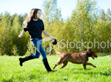

Volunteers Needed for Bark in the Park
Conveniently located in the heart of the city, Poopie Lane is Jamaica Plain’s premiere dog park. With a fenced-in area for off-leash activities, doggie fountains, complimentary poop bags, and even an agility area, you are sure to have a fun time with your pooch. We are a community of dog lovers that seek to create the best possible experience for you and your canine.